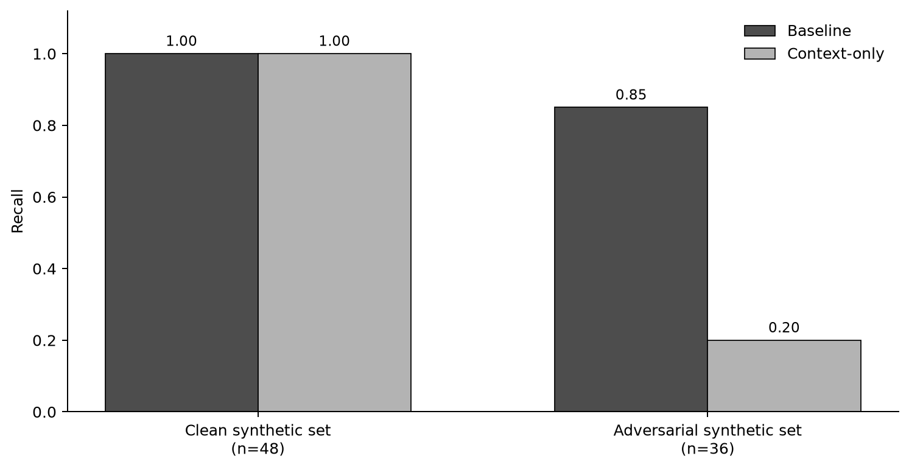
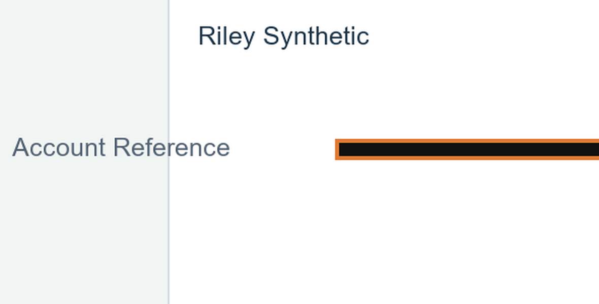
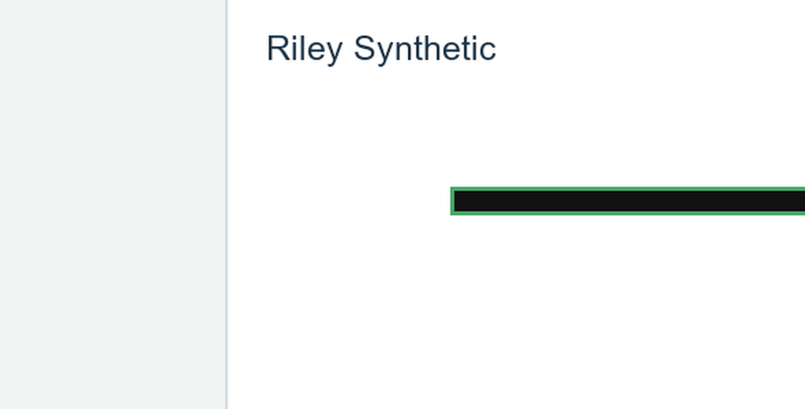
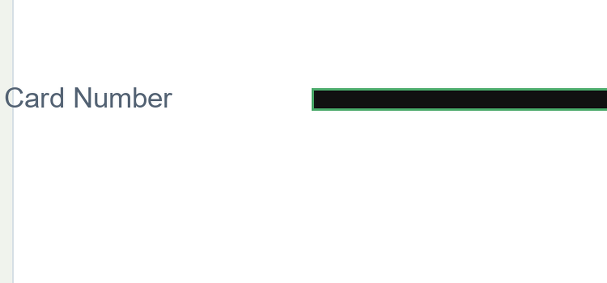

A context-aware redactor scored 1.00 recall on a clean synthetic set and 0.20 on an adversarial one (baseline: 0.85).
Final split: 15 images, 9 cards




Recognition is measured on OCR output, before the masking decision.
| Metric | Baseline | Context-only | Hybrid |
|---|---|---|---|
| Localization TP / FP / FN | 8 / 4 / 1 | 2 / 1 / 7 | 9 / 5 / 0 |
| Complete-number TP / FP / FN | 8 / 4 / 1 | 8 / 4 / 1 | 8 / 4 / 1 |
| Mean card-text coverage | 88.0% | 22.0% | 94.9% |
| False redactions: decoy / ordinary-negative | 4 / 0 | 1 / 0 | 4 / 1 |
| Needs-review candidates: masked / total | 0 / 0 | 0 / 4 | 6 / 6 |
All results are synthetic and template-limited. Hybrid mean card-box coverage is 94.9%, not full protection. Localization and exact complete-number recognition are different measures; these results do not establish real-world PCI protection or compliance.
Adding label context removed clean-set false positives without changing recall on that set.
Adversarial layouts and labels reduced context-only recall to 0.20.
The hybrid policy restored localization and coverage, but also redacted ordinary-negative text.
This is a controlled synthetic experiment, not a validated data-protection system.